security researcher, bug bounty hunter, dan pentester
JASPEN - Jasa Pentester
Pentest & Review Keamanan
Jaspen membantu bisnis menemukan celah keamanan pada web app, API, source code, dan workflow CI/CD dengan pendekatan manual, PoC aman, serta rekomendasi perbaikan yang jelas.
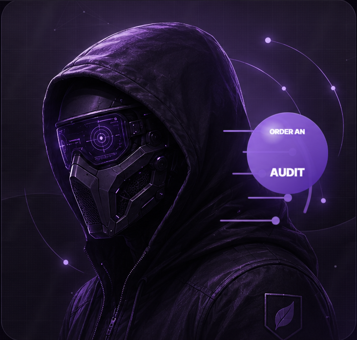
rekam jejak advisory credit, bug bounty, dan temuan triaged yang memperkuat kredibilitas teknis
pentest, source-code review, dan CI/CD
Kenapa pilih Jaspen?
Review yang fokus pada risiko nyata, bukan laporan kosmetik.
Evidence-first
Setiap temuan disertai bukti teknis, langkah reproduksi, dampak, dan jalur perbaikan.
Manual testing
Pengujian tidak berhenti di scanner. Logika bisnis, akses kontrol, dan trust boundary ditelusuri manual.
Source-aware
Review mampu masuk ke level kode, alur data, validasi, state, cache, dan sink yang sensitif.
Remediation clear
Laporan dibuat praktis: prioritas risiko, root cause, rekomendasi fix, dan retest setelah patch.
Threat modeling
Petakan attacker input, validasi, permission check, dan sensitive sink sebelum bug dipakai penyerang.
Security research proof
Layanan
Jasa pentest dari scope awal sampai laporan siap ditindaklanjuti.
Web & API Pentest
Pengujian OWASP-style untuk autentikasi, otorisasi, IDOR, injection, upload, session, dan logic flaw.
Konsultasi Scope PentestSource Code Review
Review kode manual untuk menemukan bug yang sering lolos dari scanner dan automated testing.
Konsultasi Scope PentestBug Bounty Style Review
Assessment berbasis impact: hanya temuan yang reproducible, reachable, dan punya risiko nyata.
Konsultasi Scope PentestCI/CD & Supply Chain
Review workflow GitHub Actions, secrets, dependency path, artifact signing, dan release pipeline.
Konsultasi Scope PentestReport & Retest
Laporan teknis berisi severity, PoC aman, root cause, rekomendasi fix, dan validasi ulang patch.
Konsultasi Scope PentestOutput Pentest
Yang klien dapatkan bukan hanya testing, tetapi laporan yang bisa ditindaklanjuti.
Executive summary
Ringkasan risiko utama, dampak bisnis, dan prioritas penanganan untuk manajemen dan stakeholder.
Technical report
Finding teknis lengkap untuk developer: severity, langkah reproduksi, PoC aman, dan rekomendasi fix.
Evidence bundle
Screenshot, request-response, code path, atau bukti lain yang relevan untuk mempermudah verifikasi internal.
Root cause analysis
Analisis akar masalah agar perbaikan tidak hanya menutup gejala, tetapi juga sumber risikonya.
Remediation priority
Severity, prioritas perbaikan, dan konteks exploitability supaya tim tahu issue mana yang harus ditutup duluan.
Retest report
Validasi ulang setelah patch untuk memastikan finding benar-benar tertutup sesuai scope yang disepakati.
Paket & Scope
Pilih model engagement yang paling sesuai dengan target review Anda.
Web/API Pentest
Startup, SaaS, internal dashboard, dan aplikasi yang menangani autentikasi, role, atau data sensitif.
Output:Report teknis lengkap + retest.
Source Code Review
Repository GitHub atau private codebase yang butuh verifikasi manual pada code path sensitif.
Output:Finding berbasis code path, sink, dan root cause.
CI/CD Review
GitHub Actions, secret handling, release workflow, dependency path, dan artifact trust chain.
Output:Supply-chain risk report dan rekomendasi hardening.
Bug Bounty Style Review
Tim yang ingin assessment impact-focused dengan fokus pada temuan yang reproducible dan bernilai tinggi.
Output:High-signal vulnerability report.
Harga mengikuti scope, kompleksitas aplikasi, jumlah endpoint, kebutuhan akses source code, environment pengujian, dan retest setelah patch.
Prestasi
Bukti publik yang bisa diverifikasi.
5 public curl CVE credits
Berhasil mendapatkan lima CVE pada project curl/libcurl dari riset keamanan yang berfokus pada auth state, credential leakage, dan handle reuse.
Lihat advisory curlGoogle Bug Hunters reward
Profil Google Bug Hunters menunjukkan 4 awards, termasuk reward untuk report yang ditandai fixed dan dapat dipakai sebagai bukti tambahan atas kualitas responsible disclosure.
Lihat profil Google Bug HuntersAnthropic triaged TOCTOU finding
Pernah menemukan bypass TOCTOU pada `claude-code-action`, di mana image issue/PR body tetap di-resolve dari `body_html` live meski `originalBody` sudah dipin dari webhook snapshot.
Lihat ringkasan proof AnthropicJejak publik founder
Profil publik tersedia melalui GitHub, portfolio riset keamanan, dan advisory credit open-source untuk membantu proses validasi sebelum engagement.
Lihat GitHub profileRecognition & Security Research Proof
Pengakuan program keamanan ditampilkan secara aman, proporsional, dan tetap bisa membangun trust.
TOCTOU bypass pada claude-code-action
Pernah melaporkan celah pada `claude-code-action` yang melemahkan proteksi TOCTOU untuk issue/PR body. Body teks tetap memakai snapshot webhook, tetapi image justru diunduh dari `body_html` live setelah trigger.
Temuan ini divalidasi Anthropic, masuk status `Triaged` dengan severity `High (7.7)`, lalu diberi bounty `$3,700` karena PoC berhasil menunjukkan bahwa konten gambar hasil edit pasca-trigger tetap bisa memengaruhi output Claude.
Program
Bukti
Status
Anthropic
Triaged TOCTOU finding
$3,700 bounty
Google Bug Hunters
4 awards + reward proof
Public/profile proof
curl/libcurl
CVE/advisory + disclosed H1 proof
Public advisory
arkadiyt-projects
Disclosed H1 report
Public report proof
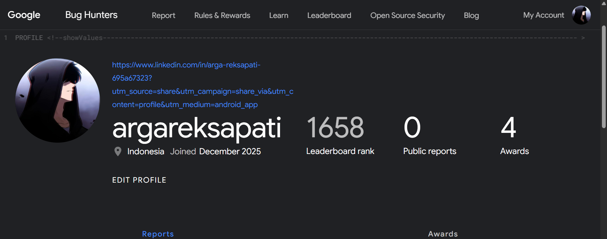
Google Bug Hunters profile
Profil publik dengan 4 awards
Dipakai sebagai proof publik untuk username, jumlah awards, dan jejak partisipasi di Google Bug Hunters.
Buka URL profil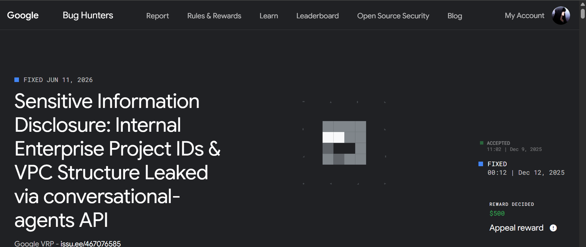
Google reward proof
Reward decided dan status fixed
Screenshot ini menunjukkan status fixed dan reward decided pada Google Bug Hunters sebagai bukti publik tambahan dari report yang tervalidasi.
Buka URL profil publik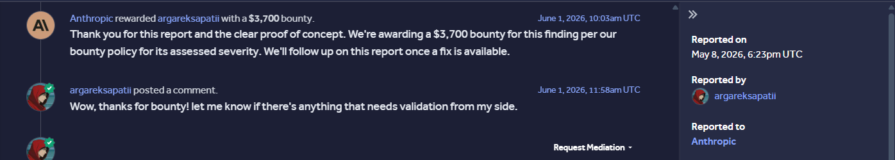
Anthropic bug bounty
Triaged claude-code-action image TOCTOU bypass
Proof ini menunjukkan reward `$3,700` dari Anthropic untuk temuan TOCTOU bypass pada `claude-code-action`, termasuk pengakuan bounty langsung pada timeline report.
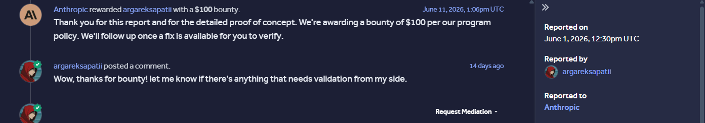
Anthropic bug bounty
Additional validated bounty proof
Screenshot ini menunjukkan proof tambahan bahwa report lain di Anthropic juga mendapatkan bounty `$100`, memperkuat rekam jejak validasi teknis dan responsible disclosure.
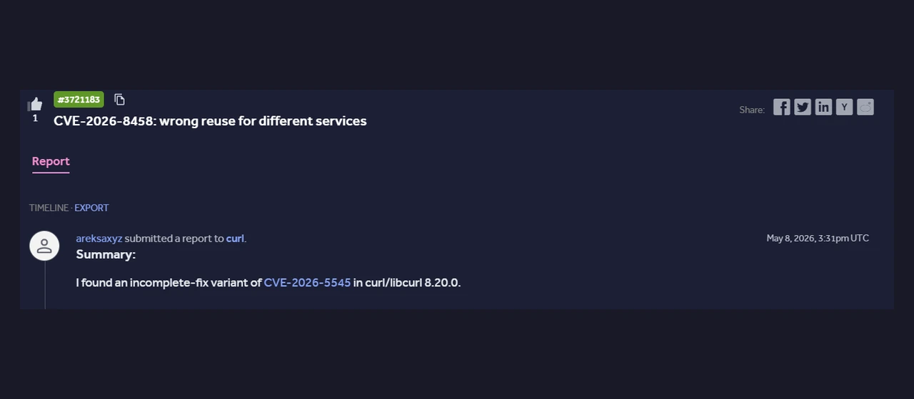
curl/libcurl advisory proof
CVE dan advisory credit publik
Contoh bukti advisory untuk project curl/libcurl yang sudah public disclosure dan dapat dipakai untuk memverifikasi credit open-source.
Buka URL advisory curl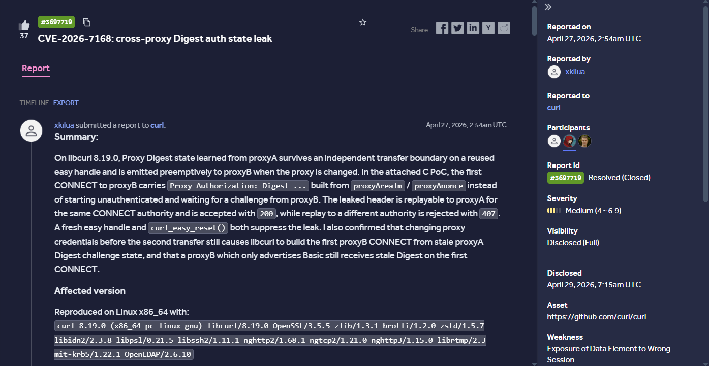
curl HackerOne proof
Report #3697719: CVE-2026-7168
Disclosed HackerOne report untuk temuan cross-proxy Digest auth state leak pada curl/libcurl, ditampilkan sebagai bukti publik tambahan selain advisory resmi.
Buka report HackerOne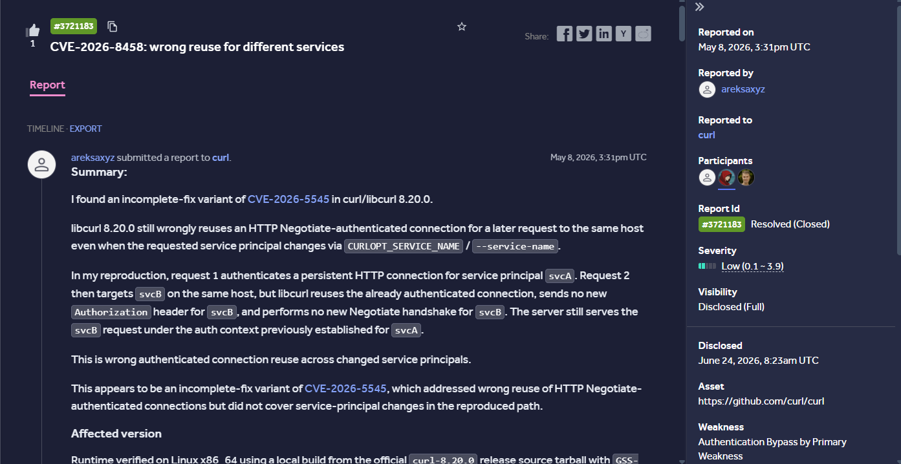
curl HackerOne proof
Report #3721183: CVE-2026-8458
Proof publik HackerOne untuk wrong reuse for different services pada curl/libcurl, melengkapi jejak advisory dan disclosure yang bisa diverifikasi langsung.
Buka report HackerOne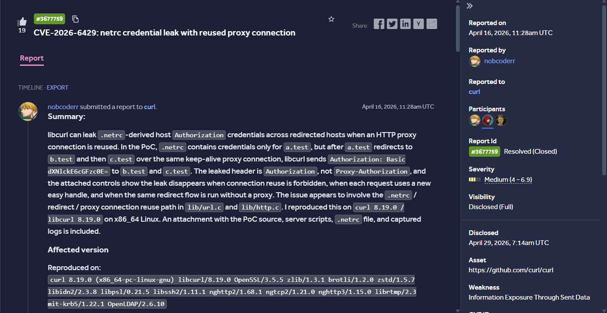
curl HackerOne proof
Report #3677759: CVE-2026-6429
Disclosed report HackerOne yang menunjukkan netrc credential leak pada reused proxy connection, relevan sebagai bukti kualitas reproduksi dan analisis root cause.
Buka report HackerOne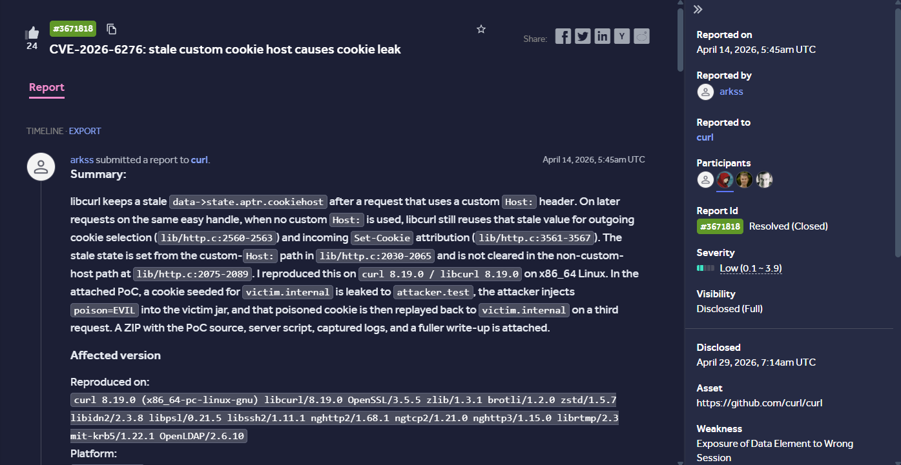
curl HackerOne proof
Report #3671818: CVE-2026-6276
Bukti disclosed report untuk stale custom cookie host yang menyebabkan cookie leak pada curl/libcurl, ditampilkan sebagai validasi publik tambahan dari riset keamanan yang dilakukan.
Buka report HackerOne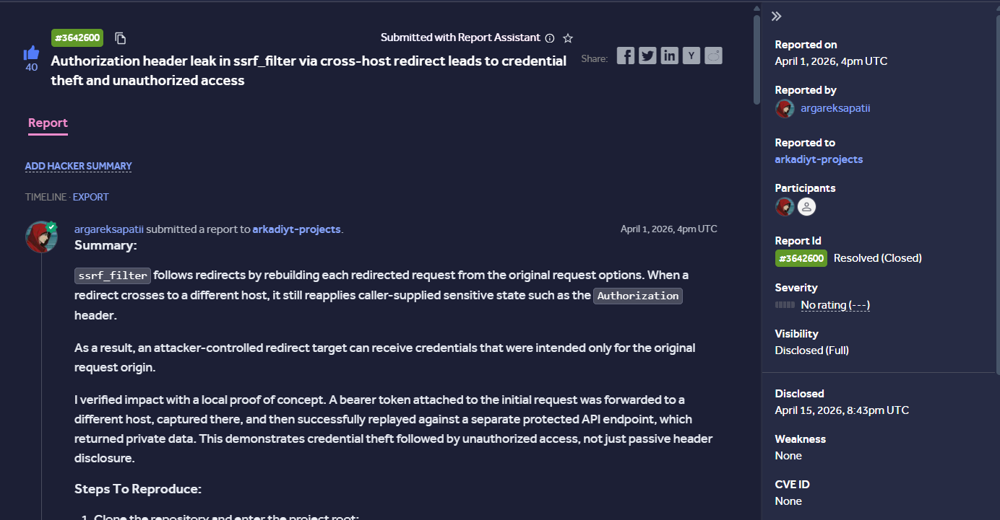
HackerOne disclosed proof
Report #3642600: authorization header leak
Proof publik dari report disclosed di HackerOne pada arkadiyt-projects terkait authorization header leak melalui cross-host redirect yang berdampak pada credential theft dan unauthorized access.
Buka report HackerOneCara kerja
Alur pentest yang jelas dari scope awal sampai retest.
Scope & threat model
Petakan target, boundary, role, entry point, trust assumption, dan impact yang paling relevan untuk bisnis Anda.
Source-guided testing
Pengujian manual dipadukan dengan code review, endpoint mapping, dan eksperimen kecil untuk memverifikasi bug nyata.
Evidence & remediation
Setiap finding disusun dengan severity, langkah reproduksi, dampak, root cause, dan rekomendasi fix yang bisa ditindaklanjuti.
Retest after patch
Perbaikan dapat divalidasi ulang untuk memastikan issue benar-benar tertutup dan tidak berpindah ke jalur lain.
Validasi Publik
Trust layer yang bisa dicek sebelum Anda mengirim scope.
0
public curl CVE credits
0
Google Bug Hunters awards
0
public validation links
Link validasi mencakup portfolio, GitHub, Google Bug Hunters, LinkedIn, dan advisory curl yang sudah public disclosure.
Cocok Untuk
Model engagement ini paling relevan untuk tim yang butuh review yang actionable.
Startup launch
Startup yang akan launch aplikasi dan ingin mengurangi risiko sebelum go-live
Konsultasi Scope PentestSaaS & internal app
Produk SaaS atau dashboard internal yang menangani autentikasi, role, dan data user
Konsultasi Scope PentestEngineering team
Tim engineering yang butuh second opinion untuk source code, API, atau patch validation
Konsultasi Scope PentestSupply chain
Perusahaan yang ingin review GitHub Actions, secret exposure, dependency risk, dan release pipeline
Konsultasi Scope PentestKeamanan & Etika
Pengujian dilakukan dengan kontrol, otorisasi, dan batasan yang jelas.
Izin tertulis & scope
Pengujian hanya dilakukan setelah ada otorisasi tertulis dan ruang lingkup yang disepakati bersama.
NDA support
Mendukung NDA dan pembatasan akses sesuai kebutuhan agar informasi sensitif tetap terlindungi.
Safe PoC
Tidak melakukan destructive testing tanpa persetujuan. PoC dibuat aman, terkontrol, dan proporsional.
Data minimization
Tidak mengambil data sensitif melebihi kebutuhan bukti. Semua validasi mengikuti batasan yang disetujui.
Sample Report
Bantu calon klien menilai kualitas output sebelum mulai engagement.
Sample report sanitized ini dapat memuat executive summary, scope, finding, severity, impact, reproduction steps, evidence, root cause, recommendation, dan retest status.
01Summary & scope
02Severity & impact
03Reproduction steps
04Evidence & request-response
05Root cause & recommendation
06Retest status
FAQ
Pertanyaan yang biasanya muncul sebelum scope dikirim.
Berapa lama proses pentest?
Tergantung scope, jumlah fitur, endpoint, role, dan kedalaman review yang dibutuhkan.
Apakah bisa review source code private?
Bisa, dengan akses terbatas sesuai kebutuhan review dan NDA bila diperlukan.
Apakah testing aman untuk production?
Testing dilakukan secara terkontrol sesuai scope, batasan, dan approval yang sudah disepakati.
Apakah termasuk retest?
Retest dapat dilakukan setelah patch untuk memastikan issue sudah tertutup dan tidak muncul lagi pada jalur yang sama.
Apakah menerima project kecil?
Bisa, selama scope, target, dan otorisasi pengujian dijelaskan dengan jelas sejak awal.
Request
Diskusikan scope pentest dan target keamanan yang ingin diuji.
Ceritakan aplikasi, API, repository, atau pipeline yang perlu diuji. Jaspen akan bantu menyusun scope awal, metode pengujian, kebutuhan akses, NDA, dan output laporan yang dibutuhkan.
- Web application pentest dan API assessment
- Source-code review untuk auth, data flow, dan trust boundary
- CI/CD, secret exposure, dependency, dan supply-chain review
- Retest untuk validasi patch setelah perbaikan
- Pengujian hanya dilakukan untuk target yang memiliki otorisasi sah